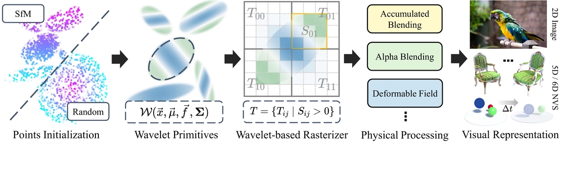

About
I am a Master's student in Electronic Information (Communication Engineering) at the School of Electronic Science and Engineering, Nanjing University (expected June 2026), supervised by Hao Zhu. I received my B.Sc. in Communication Engineering from the School of Information Science and Engineering, Hohai University in June 2023. From May to August 2025, I was a research intern in the Business Technology Department at Alibaba Taobao Tmall Group, working on 3D reconstruction and generative algorithms.
Research Interests
- Artificial Intelligence Machine learning, deep neural networks, and optimization methods for building intelligent systems.
- 3D Reconstruction Recovering 3D geometry and appearance from images, video, or point clouds to create digital representations of real-world scenes and objects.
- Computer Vision Enabling computers to interpret and understand visual information, including recognition, detection, and scene understanding.
Selected Publications
